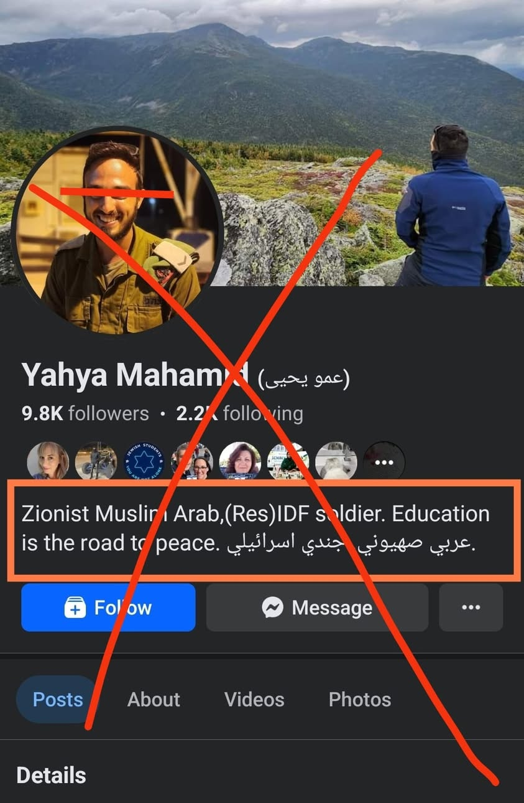
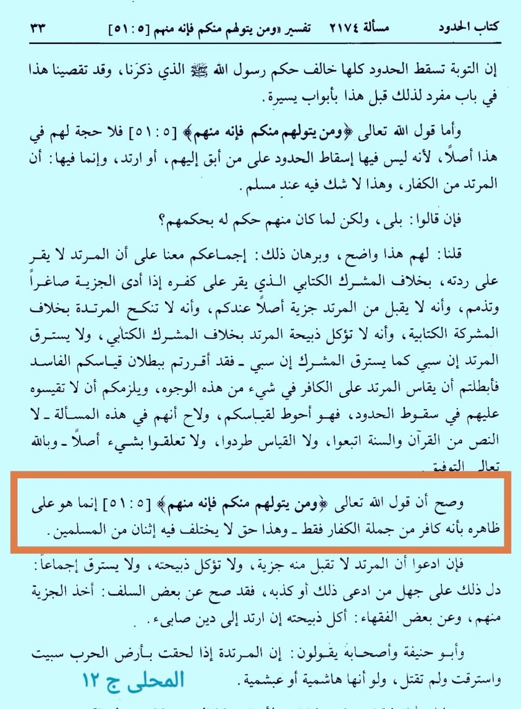

ইমাম ইবনু হাযম আল-আন্দালুসি রাহ. বলেন,
৩০ এপ্রিল, ২০২৪
ইমাম ইবনু হাযম আল-আন্দালুসি রাহ. বলেন,
‘এটি সঠিক যে, আল্লাহর বাণী (সূরা মায়িদা- ৫১)
{আর তোমাদের মধ্যে যে তাদের সঙ্গে বন্ধুত্ব করবে, সে তাদেরই একজন।} আয়াতটি বাহ্যিক অর্থের ওপর প্রযোজ্য হয়ে সেই ব্যক্তি কা ফে র দের অন্তর্ভুক্ত একজন কা ফে র বিবেচিত হবে। এটি এমন এক সত্য, যার ব্যাপারে কোনো দুই মুসলমান দ্বিমত করে না।’ [আল-মুহাল্লা— খণ্ড ১২, পৃষ্ঠা ৩৩]
অর্থাৎ কা ফে র দের সঙ্গে বন্ধুত্ব এবং মুসলিমদের বিরুদ্ধে তাদের সহায়তা দানকারী ব্যক্তি কা ফে র তথা মু র তা দ হওয়ার ব্যাপারে আহলেসুন্নাহ ওয়াল জামাআতের ইজমা রয়েছে। তবে শুধুমাত্র জাহমি-কালামিরা এ ব্যাপারে ভিন্নমত পোষণ করে থাকে।

